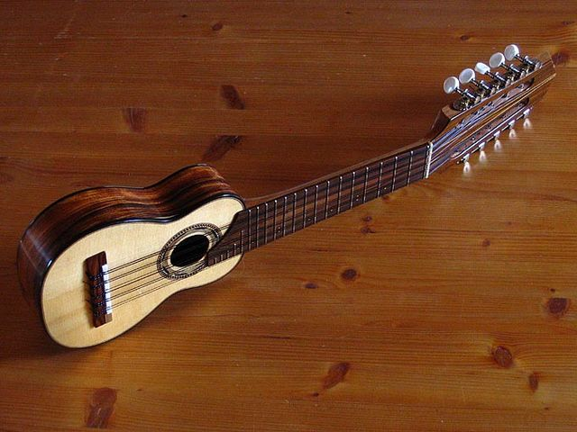
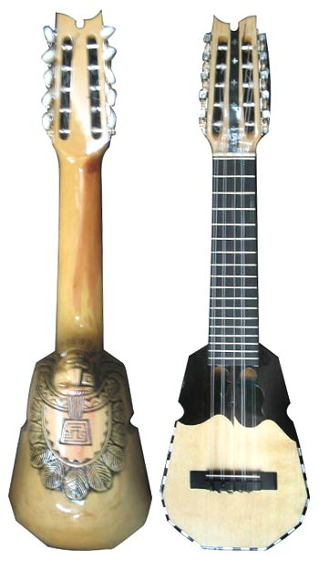

Existem outros tpos de charango além dos mostrados nas imagens da pagina “o que é o charango”, temos como exemplo o charango modelo kjarkas e o modelo peruano.
O Charango modelo peruano(Primeira imagem) tem a caixa reta, a estrutura dele lembra muito um violão, não necessáriamente todos os charangos do Perú tem essa aparência, entretanto, como esse modelo é mais fábricado no Perú, recebeu esse nome, já o charango modelo kjarkas(A segunda imagem)tem a tampa de uma forma mais quadrada).
 